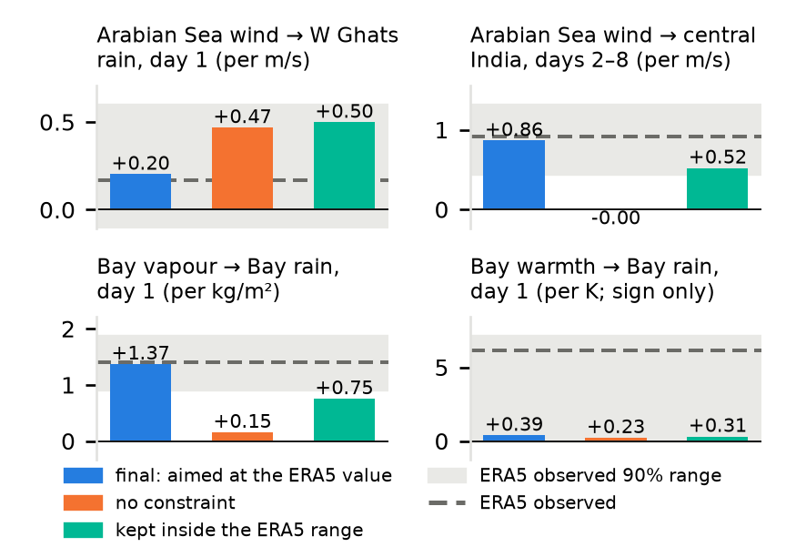
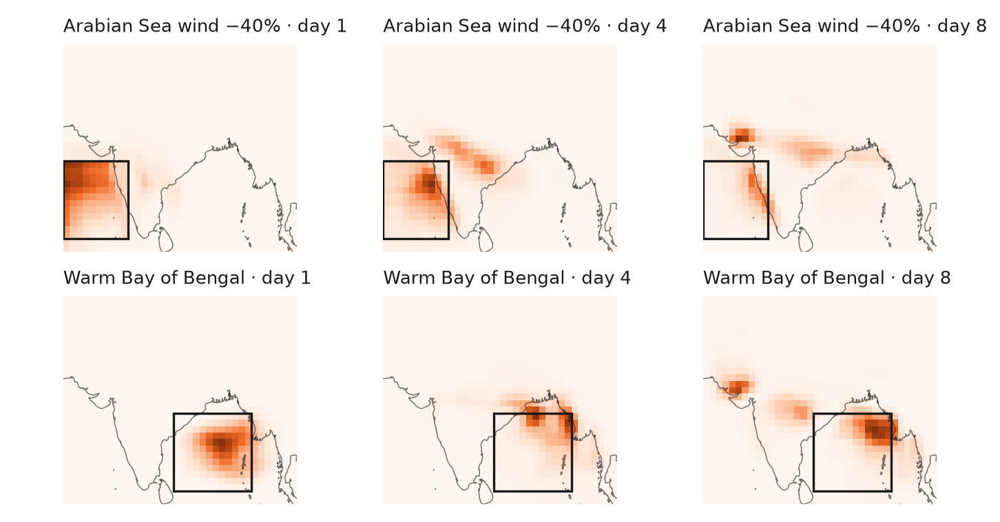
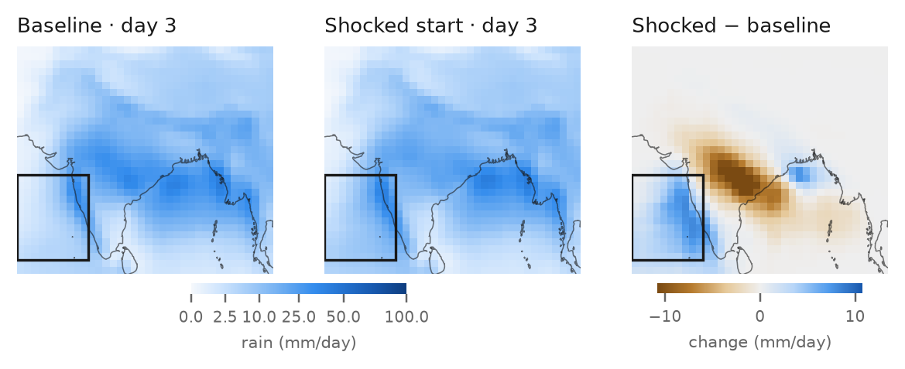
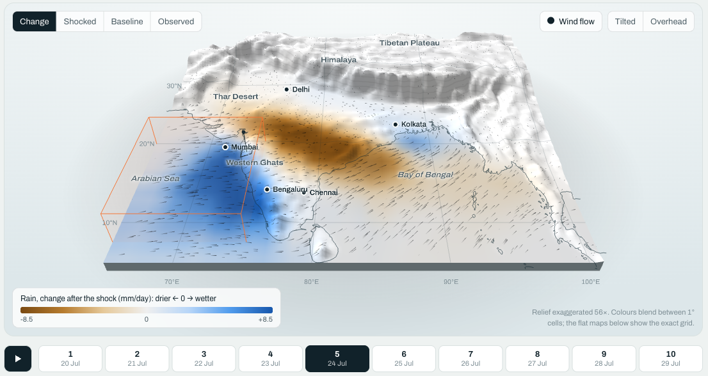
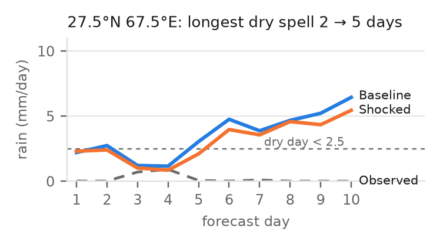

We forecast 10 days of weather over India and the surrounding seas from three observed days, and rerun the same model from a shocked start to show where a local change to today's weather moves rainfall and dry spells. USP: the what-if answers are checked against reality. Each shock response is fine-tuned to the rain response measured in ERA5 with the rest of the day held fixed (4 of 4 checks met), from a forecaster whose locality is built in and that answers in 0.07 s on a laptop CPU.
System architecture. train.py (GPU; 1979–2017; 3 seeds) →
scripts/finalize.py (ensemble, calibration, model choice on 2018–2019 by a fixed rule) → artifacts/ (24 MB of plain
arrays) → serve.py (FastAPI, offline, ≤ 4 CPU threads; /health, /simulate) ← grader. dashboard/ is a
separate static web app that calls the same /simulate live.
Day-4 skill above persistence on every field (+0.28 at worst); 0 invalid outputs in 240 windows (finite, rain ≥ 0, −40 to +60 °C); a non-zero, localised response to both shocks in every tested window; zero shock identical to the baseline.
| Skill vs better reference | Day 1 | Day 4 | Day 8 | Pooled | Day 4 vs pers. |
|---|---|---|---|---|---|
| 2 m temperature | +0.37 | +0.21 | +0.06 | +0.26 | +0.28 |
| Rain | +0.30 | +0.06 | −0.01 | +0.12 | +0.30 |
| 10 m wind, east | +0.35 | +0.15 | +0.03 | +0.22 | +0.30 |
| 10 m wind, north | +0.38 | +0.13 | +0.02 | +0.20 | +0.34 |
| Sea-level pressure | +0.39 | +0.14 | +0.03 | +0.21 | +0.28 |
| Water vapour | +0.41 | +0.20 | +0.04 | +0.25 | +0.31 |
Skill = 1 − RMSE / min(RMSE persistence, RMSE climatology), latitude-weighted; pooled = leads 1, 4, 8 as scored. Also held out: 2022 (closest to the 2023+ test dates), mean skill +0.180 over 118 windows.


Konkan floods window (forecast from 20 July 2021). On this window 94% (wind stall) and 99% (warm Bay) of day-1 response energy lies within 3 cells of the box. Over 12 held-out windows: localised 100% / 100%, spreading 33% / 92%, within 5 std 100% / 92%.
Heavy rain is under-forecast: where more than 50 mm/day fell, the forecast gives 67% of it on day 1 and 29% on day 4, and single-cell flood peaks are missed (Konkan: 56 mm/day observed, 27 forecast two days ahead). Rain skill reaches climatology level by day 8 (−0.01). The wind-stall response often fades before days 4–8 (spreads in 33% of windows). The realism check rests on observed regressions: associations, not experiments.

monsoon_stall).
Same model and inputs, two rollouts. Rain colour scale shared by both forecasts; difference scale centred at zero (brown = drier, blue = wetter).
/simulate calls.
A 3D relief model of India (ERA5 terrain) carries the change, the wind flow and the shock box and plays the 10 days; flat 1° maps, the cell chart
and the response summary update with it. A second view checks the forecast against what happened and both baselines.
For every land cell and each timeline, the longest run of consecutive forecast days with rain below 2.5 mm/day; the indicator is shocked minus baseline, in days. Here 16 land cells get a longer dry spell (up to +3 days) and 10 a shorter one; 10-day land rain changes by −4.64 mm on average. Dry-spell changes concentrate where rain hovers near the threshold, so read them together with the rain change.
A state agriculture or water-resources desk asks before the weekly advisory: if the monsoon current over the Arabian Sea slackens, which districts face a longer dry spell in the next ten days? The dashboard answers in seconds on a laptop CPU, mapping where rain shifts and how many extra dry days each land cell gets. That can flag areas for sowing-delay or protective-irrigation advice, or for checking reservoir releases.
It cannot estimate crop loss (that needs crop type, growing stage, irrigation and soil moisture), and 1° cells cannot resolve district-scale extremes.
pip install -r requirements.txt && python serve.py --port 8000 serves the bundled weights offline.
train.py, scripts/finalize.py and evaluate.py regenerate every number here; the official
schema validator and repo scan pass.